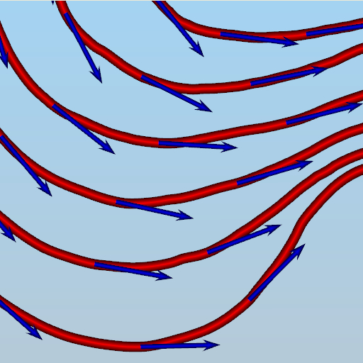

Visualisation Of Flow
-
There are 3 ways to visualise flow:
-
Streamline
-
Pathline
-
Streakline
-

-
Streamlines:
-
Streamlines are curves in the flow field whose tangents at
every point are along the direction of velocity of fluid
element at that point.
-

-
Streamlines are instantaneous, that is, they change with
time and position.
-
Two streamlines cannot intersect each other.
In case of steady flow, streamlines do not change with time.
-
Pathlines:
-
Path lines are trajectories of individual fluid particles within
the flow field. Unlike streamlines, they can intersect with other pathlines.
-

-
In the above long exposure image, path lines followed by stars in the night sky
can be be observed.
-
Streaklines:
-
Streaklines are the set of trajectories of all fluid particles
that have passed through a particular point.
-
-
A colored dye injected at a single point in a flow field
can be used to demonstrate streaklines.